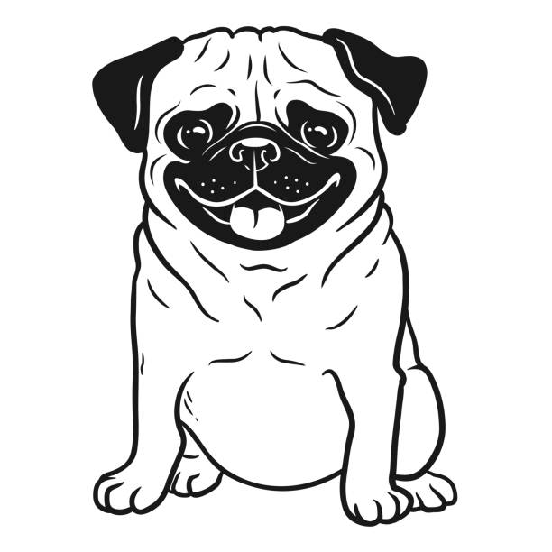
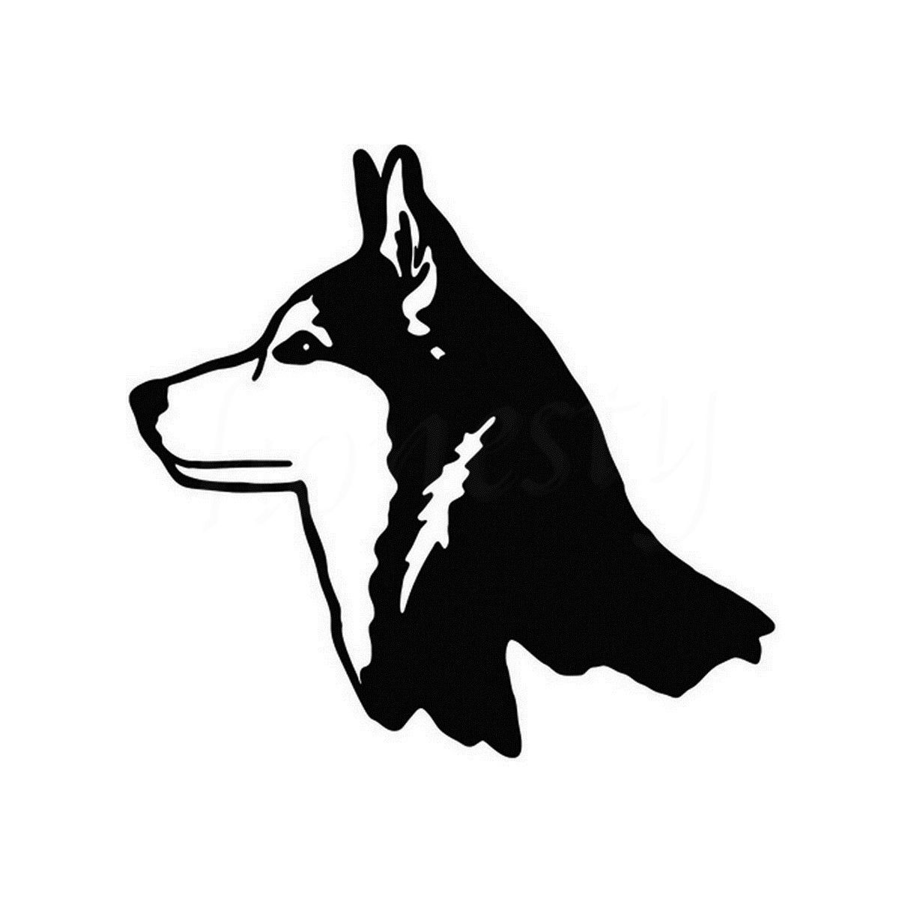
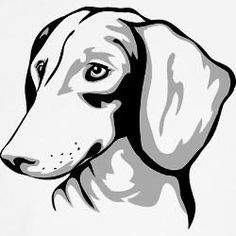
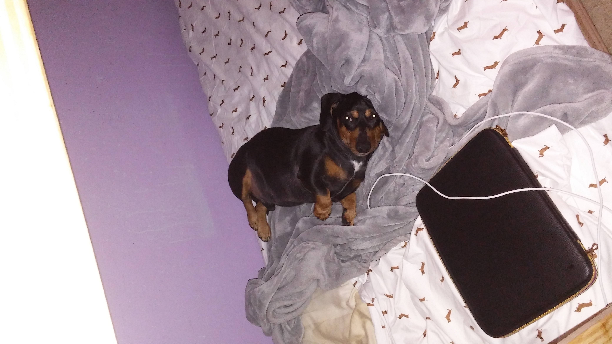
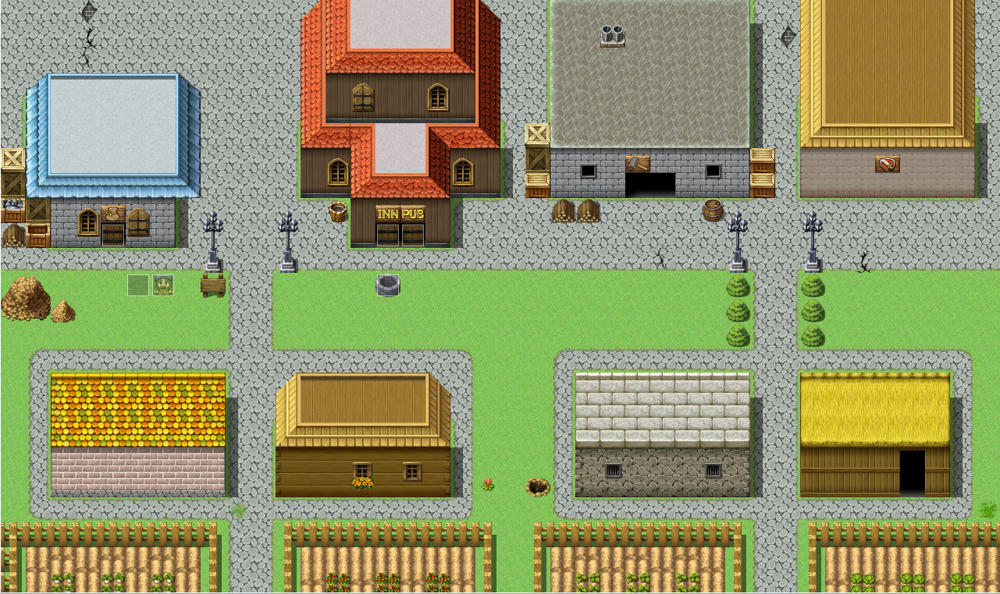

We are the Wagglers! We are a small company that enjoys taking care of dogs. Our mission is to help owners that either may be too busy or have other circumstances that will prevent them from taking care of their companions. We treat companions as if they are a part of our own family. Our "Waggle Experts" are all certified to take care of pets and have been checked for any allergies to any dog breed.
| The Pug Patrol (Basic) | The Husky Hustle (Premium) | The Dachshund Dream (Ultimate) |
|---|---|---|
|

$44.99
|

$79.99
|

$159.99
|
*Note:Savings are in comparison to the Pug Patrol (Basic) package.
We feed, walk, bathe, and play with dogs. We also monitor their health and inform you immediately of anything they may have contracted.
Care Packages are subscription packs to our service. There are currently three different types of Care Packages that you may purchase. Each provide different levels of care from each other. You can find them here.
You may cancel at any time! You will only get refunded for the remaining weeks left of your Care Package.
Unfortunately, you will be unable to use them once you cancel.
Yes you can! Contact your Waggle Expert for more information on how to upgrade
Not yet! But we do hope to include more companions in the near future!
Each Care Package can only cover a maximum of two dogs per package. Additional dogs will require another Care Package purchase.
Dogs must be at least 1 year old in order to be covered. The maximum age is at least less than 4 years younger than the average life expectancy based on their breed. These senior dogs are given a 25% discount!
If you have any other questions, please contact us through this link.
One thing I like to do in my free time is to take care of some of my neighbor's dogs. Sometimes, my neighbors would go on vacation and cannot bring their dogs with them. In order to have someone they trust care for their dog, they would call me first. While they are away I would walk, feed, and play with the dog while giving the owners daily updates on how their dog is doing. Lately, I have been attempting to apply to apps that will let me be a dog sitter part-time while I attend college.
Another hobby I love doing in my spare time is writing stories. Most of the stories I like to write involve breaking some sort of trope or norm that other stories typically do. It is either that or creating a unique style of storytelling (For example, while more stories have been doing this as of late, an omni-present narrator that constantly has arguments back and forth to the protagonist while every other character is aware of the narrator). With each story I make, I like to give myself little challenges so that I could write something unique that others would enjoy. This also helps me to avoid repeating similar stories that I have read or created before.
Ever since I picked up a Sega Dreamcast controller as a child, I have always wanted my career to involve games in some way. At first, that goal was only limited to making money from testing them. After many, many hours of playing games and experiencing/learning many lessons from them, my goal changed to creating games that would give others a similar experience to what I had growing up. I wanted others to start getting lost in the world of games, to share their experience with others and become friends, to vent their sorrows and find answers to questions that they may have had. All of this and more is what I want others to feel. At least, I hope they do. Once I felt joy that I have never experienced before from creating a simple block breaking game, I knew this was my life passion.
